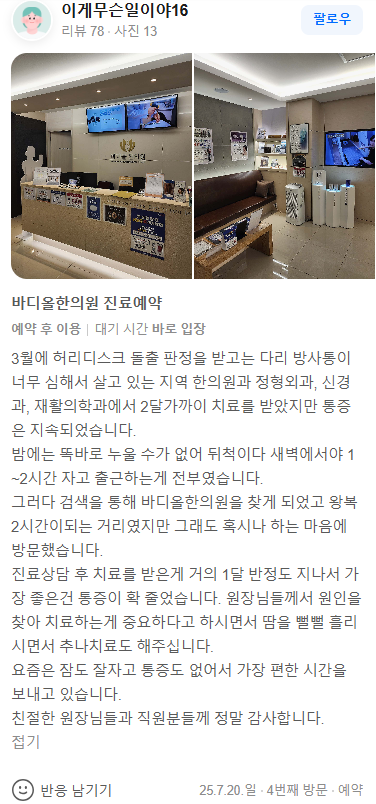

치료 증례 (실제 환자 리뷰 원문)
"3월에 허리디스크 돌출 판정을 받고는 다리 방사통이 너무 심해서... 2달가까이 치료를 받았지만 통증은 지속되었습니다. 여기와서 1달 반정도 지나서 통증이 확 줄었습니다."

1. 다리 방사통은 탈출된 디스크가 신경근을 강하게 압박하며 발생하는 전형적인 증상입니다
2. 반복되는 치료에도 호전이 없다면, 척추 분절의 고착과 골반 불균형을 해결하는 구조적 접근이 필요합니다.
3. 바디올 SART 척추정렬회복술은 요추부 압력을 분산시켜 신경 압박을 해소하고 통증을 근본적으로 완화합니다.
디스크가 탈출하여 신경을 누르면 단순히 통증만 생기는 것이 아니라, 신경염증과 주변 근육의 긴장이 동시다발적으로 발생합니다. 기존의 일반적인 물리치료나 주사가 효과를 보지 못했다면, 이는 척추의 구조 자체가 잘못된 힘을 받고 있는 '역학적 부조화' 상태일 가능성이 큽니다 .
바디올의 SART는 단순히 뼈를 맞추는 행위를 넘어, 굳어버린 척추 관절의 공간을 미세하게 확보(Space Creation)하는 것에 집중합니다. 탈출한 디스크가 신경을 압박하지 않도록 주변 인대와 근육의 긴장을 해소하고, 골반과의 정렬을 맞추어 척추가 스스로 회복할 수 있는 물리적 환경을 조성합니다.
• 변위된 요추 분절을 재배치하여 돌출된 디스크의 압박력을 즉각적으로 감소시킵니다.
• 골반 교정을 동반하여 요추에 가해지는 하중을 분산시킵니다.
• 신경근 부위의 염증을 가라앉히는 전문 약침 요법 시행.
• 척추체 주변 조직의 강화로 재발률을 낮추는 구조적 안정화 치료.
1. Saal, J. A. (1996). Natural history of lumbar disc herniation with radiculopathy. Spine.
2. Vleeming, A., et al. (2007). Movement, Stability & Lumbopelvic Pain. Elsevier.